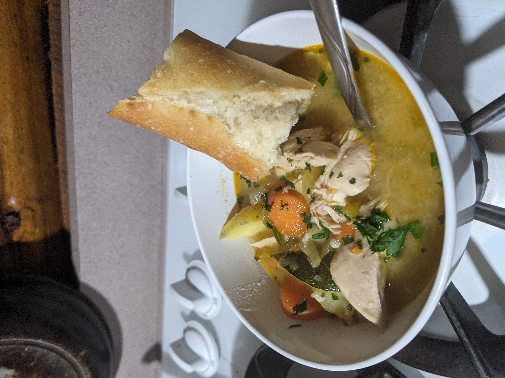

Dragonborn Chicken Stew

Description
Dragonborn Chicken Stew is a recipe I created for all of you fellow fantasy nerds out there; it's designed to be cheap, simple, healthy, wholesome, and delicious. Originally based on a [simple chicken stew recipe] I found online, I tailored it over several iterations to become a tribute to Elder Scrolls V: Skyrim and one of my regularly used cold-weather recipes. It's also relatively quick to prepare (as far as stews go).
This dish is based on the hearty and rustic style of the Nords. It's the type of thing you might be served around the campfire after a long day's march or hunt—while the crisp winter wind whips snowflakes around you and the northern lights shine overhead. The addition of Chipotle pepper gives it a "Dragonborn" kick that will warm your bones on the coldest of winter nights. Best served with a hunk of toasted bread and a mug of mead!
Ingredients
- 2 tbsp. butter
- 4 large carrots, chopped
- 3 celery stalks
- 1 white onion, chopped
- 4 green onion, chopped
- Kosher/sea salt
- Freshly ground black pepper
- Chipotle pepper, ground
- Sage, ground
- 3-4 tbsp. apple cider vinegar
- 3 garlic cloves, minced
- 1 tbsp. all-purpose flour
- 1-1.5 lb. boneless skinless chicken breasts
- 7 fresh thyme sprigs
- 7-9 bay leaves, whole
- 2 lb. potatoes, halved and quartered
- 8 cups chicken broth
- Fresh parsley, chopped (for garnish)
Steps
-
In a large pot over medium heat, melt butter. Add carrots and celery and season with salt and pepper. Cook, stirring often, until vegetables are tender (about 10 minutes). Add garlic and onions and cook briefly (about 2 minutes).
-
Add flour and stir until vegetables are coated, then add broth, thyme sprigs, bay leaves, apple cider vinegar, and potatoes. Season with salt, black pepper, sage, and Chipotle pepper. Stir well.
-
Add chicken, ensuring that all breasts are completely submerged. Bring mixture to a hearty simmer.
-
Cover and cook for 20 minutes, stirring occasionally. Reduce heat as necessary (suggested: medium-low) to keep mixture at a gentle simmer.
-
Uncover and continue to cook for another 35-45 minutes (until broth has thickened significantly), stirring occasionally. Raise heat as necessary (suggested: medium) to keep mixture at a gentle simmer.
-
Remove chicken and split with two forks into bite-sized chunks. Return chicken to mixture and season to taste. Stir. Remove leftover thyme sprigs. Continue to cook for another 15 minutes at a gentle simmer. Reduce heat slightly if necessary.
-
Remove from heat. Garnish with parsley and serve immediately with lightly-toasted bread 🍞🔥.